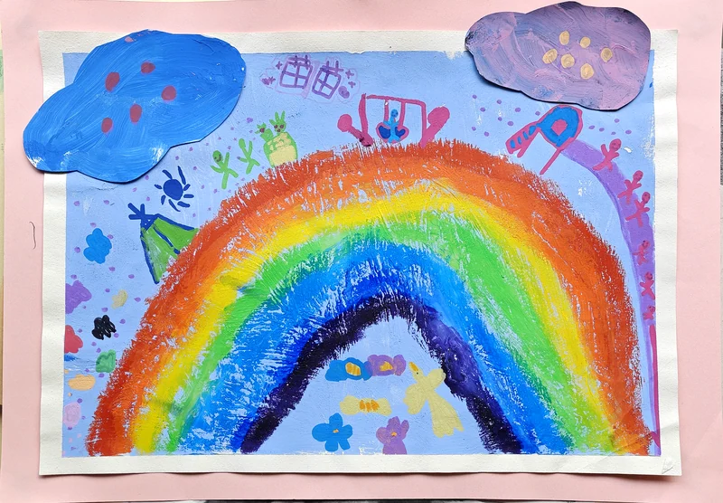
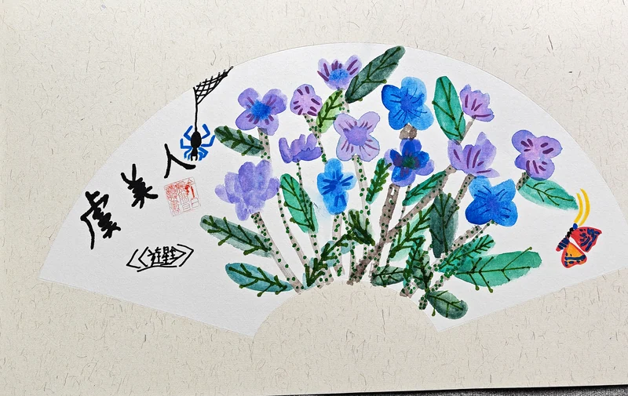

TWO MINDS. A WORLD OF POSSIBILITIES.
两份好奇，
创造整个宇宙。
从一张画，到一个故事、一件小创造。
这里，收藏 Flash 和 Lily 的作品与探索，
也留住每一次认真尝试的模样。
小小的尝试，也值得被好好珍藏。
想象力，正在发生
Lily · 彩虹来做客 Flash · 蓝紫色的花扇


TWO LITTLE WORLDS
走进各自的小宇宙。
从一个名字出发，慢慢翻看每一种热爱。
画过的、做过的、写过的。
每一种热爱，都在这里慢慢长大。
给每一种热爱，留一个位置FOR THE LITTLE THINGS THAT MATTER
THE GROWING COLLECTION
画下来，做出来，写成故事，或让一个点子在屏幕上发光。
ART & COLOUR
美术作品。
把眼中的世界，画成自己的颜色。
这是画廊的排版样稿，画作、日期和童言均为示意。
作品的小名字暂按画面取，等小画家亲自命名。
每一次尝试，都是成长的痕迹
A NOTE FROM HOME
从一面画墙开始，
给热爱一个慢慢长大的家。
这里有画纸上的颜色，也会有双手做出的点子、
自己写下的故事，以及一次次探索留下的作品。
收藏成果，也记下过程里的坚持、修改和发现。
等 Flash 和 Lily 长大了，再一起回来看。
献给 Flash & Lily，也献给此刻的童年